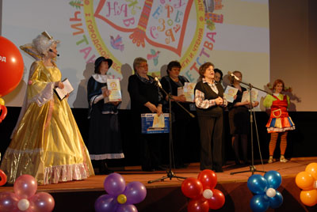
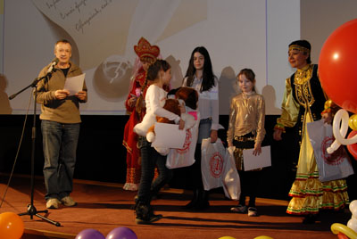

|
Закрытие фестиваля
Городской праздник закрытия фестиваля с театрализованной церемонией награждения победителей фестиваля состоялся в семейном кинотеатре «Родина» и собрал около 300 детей, подростков и их родителей. На церемонии присутствовали почетные гости фестиваля, участники и партнеры проекта.
I Городской фестиваль детской книги и чтения «Читающий город детства», посвященный Году республики, был организован Централизованной системой детских библиотек при поддержке Управления по культуре и искусству Администрации Уфы и Общественного фонда развития города. Фестиваль под девизом «Книга вечно молода – будем мы читать всегда!» проходил в течение всего марта. Задачи этой широкомасштабной акции - привлечь в библиотеки новых читателей, активизировать чтение юных уфимцев, обратить внимание общественности на проблемы детского чтения, расширить круг партнеров детских библиотек.
Самым ярким событием фестиваля стала Всероссийская Неделя детской и юношеской книги и музыки (25 марта - 2 апреля 2010 года). Активное участие приняли в акции по продвижению детской книги и чтения все двадцать детских библиотек города Уфы, присоединились и школьные библиотеки. В рамках фестиваля были организованы литературные и творческие конкурсы среди юных читателей, совместные благотворительные акции с Учебно-методическим центром «Эдвис» («Вместе с книгой мы растем») и Башкирским издательством «Китап» («Добрая книга») в пользу детей-инвалидов.
Фестиваль детской книги и чтения стал большой площадкой общения с людьми творческих профессий – прошло более 50 встреч в литературных гостиных. В гости к читателям приходили народный поэт Башкортостана Марат Карим, журналист Фарит Вахитов, популярные детские писатели Факия Тугузбаева, Расима Ураксина, Светлана Войтюк, Николай Грахов, художник Артур Василов, молодые работники пера из республиканских журналов и газет. В целом библиотеками ЦСДБ в рамках фестиваля было проведено 572 различных массовых мероприятия, в том числе литературные путешествия, игровые, кукольные и театрализованные программы. Их посетили 18 тысяч детей и подростков.
 |
 |
| Другие фото | |
{kind=link}
{kind=link}
Праздника краски
2 апреля, в Международный день детской книги, состоялся праздник закрытия I Городского фестиваля «Читающий город детства» и Недели детской книги. На целых полдня юные уфимцы – самые активные читатели детских библиотек захватили территорию гостеприимного кинотеатра «Родина», постоянного партнера и спонсора Централизованной системы детских библиотек. В празднично украшенном фойе дети могли поиграть в литературные игры, сфотографироваться со сказочными персонажами, выступить перед зрителями на малой сцене.
На заключительном торжестве были объявлены главные герои Фестиваля и Всероссийской Недели детской и юношеской книги и музыки 2010 года – победители и лауреаты увлекательных конкурсов. В конкурсе «Лидер чтения» самыми активными читателями детских и школьных библиотек столицы были названы Дусеева Эрика и Макарова Лена. Конкурс «Открытие» (связанное с родным краем, городом Уфой и книгами башкирских писателей) выявил у детей разные грани талантов и умений: Плешкова Дана и Байматова Эльвира (художественная номинация), Калабанова Анна и Дебердеева Мариам (литературная номинация), Сарвартдинов Марат и Александровская Алена (мультимедийная презентация).
Победители и лауреаты конкурсов встретились с литературными героями: Оле-Лукойе, Карлсоном, Мери Поппинс, Пеппи Длинныйчулок, их таланты и старание оценили Василиса Премудрая, Нэркэс и Королева Книг. Яркое театрализованное шоу украсили и выступления детских творческих коллективов.
Для награждения самых активных читателей пришли детский писатель Николай Грахов, председатель республиканского отделения Российского Детского фонда Нина Федянина, директор Уфимского колледжа библиотечного дела и массовых коммуникаций Амир Зайнагов, другие общественные деятели. Победителям и лауреатам конкурса достались дипломы и великолепные призы. В завершение благотворительных акций фестиваля директор издательства «Китап» Зуфар Тимербулатов и представитель книготорговой фирмы «Эдвис» Алентина Шумутбаева вручили подарочные сертификаты на книги для пополнения библиотек Городского реабилитационного центра для детей и подростков и Башкирской ассоциации родителей детей-инвалидов (БАРДИ).
А все дети получили прекрасный подарок от кинотеатра «Родина» - полноформатный мультипликационный фильм «Как приручить дракона».
Очень много интересных и полезных событий дал юным гражданам Уфы фестиваль детской книги и чтения. Пусть благодаря творчеству и подвижничеству библиотекарей наша столица превратится в Читающий город детства!